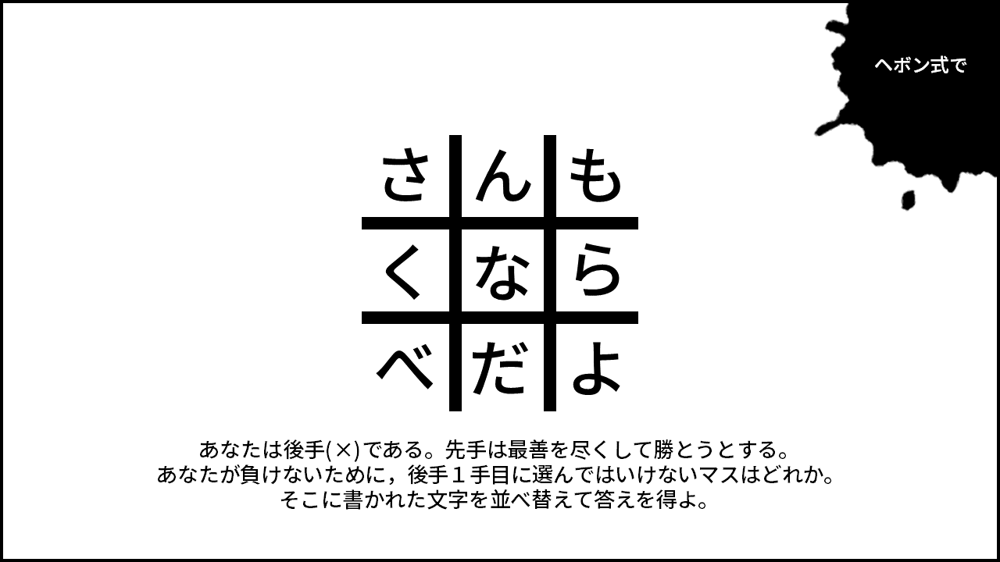
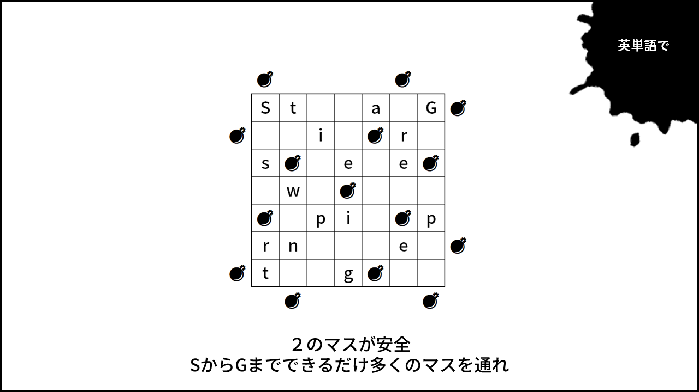
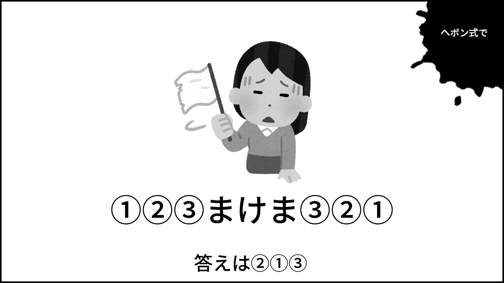
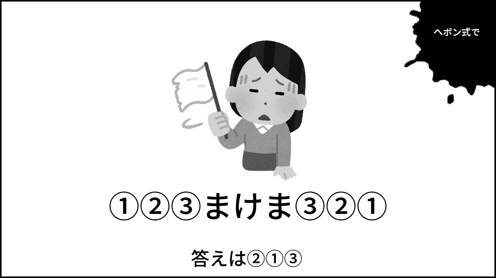
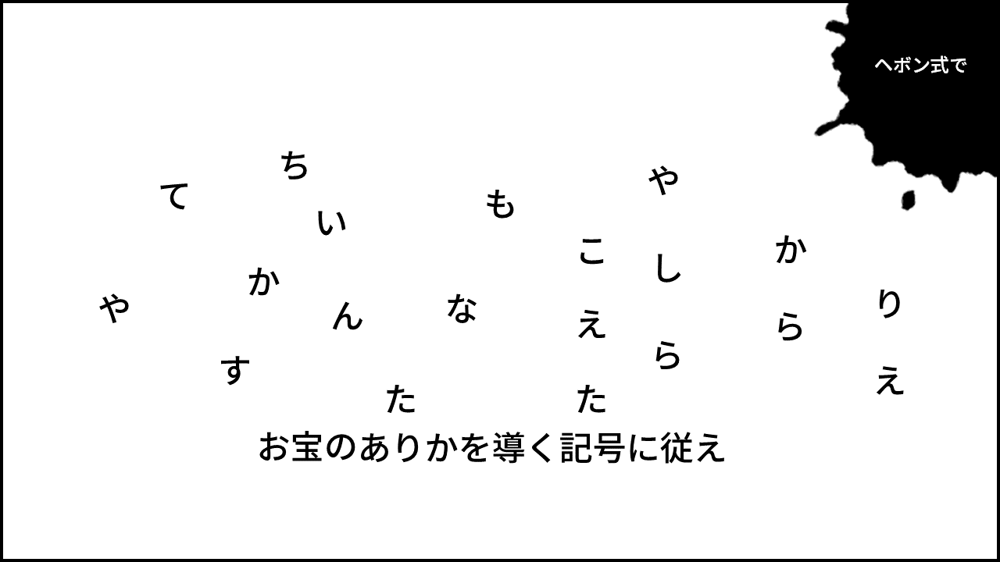
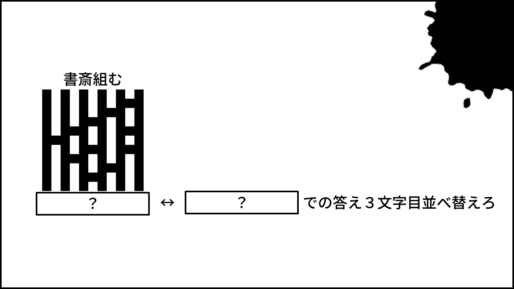
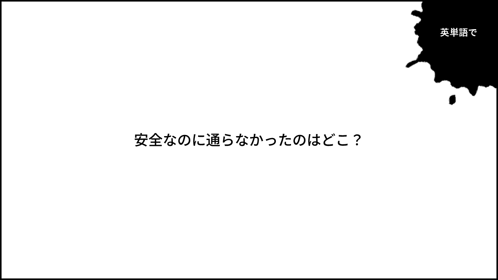
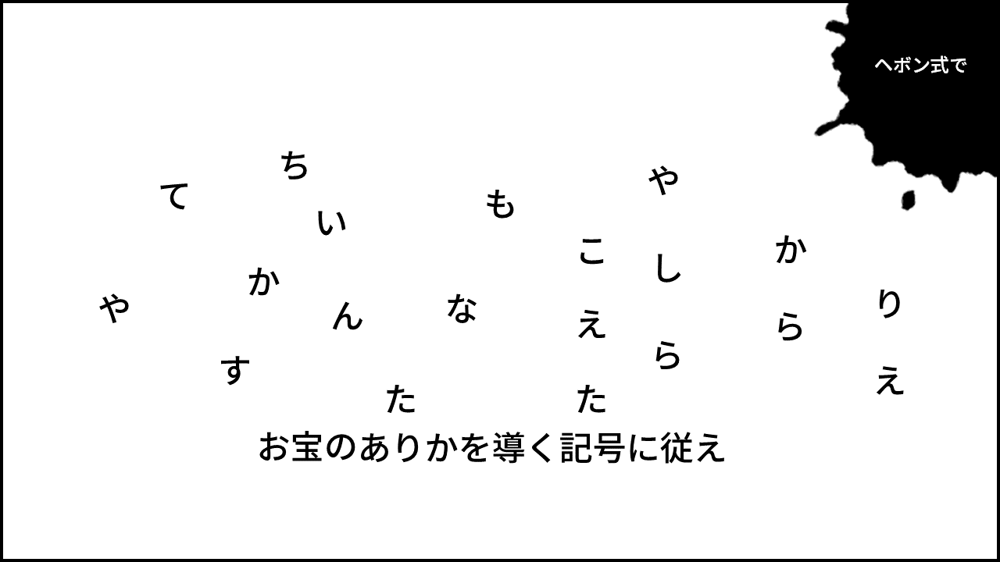
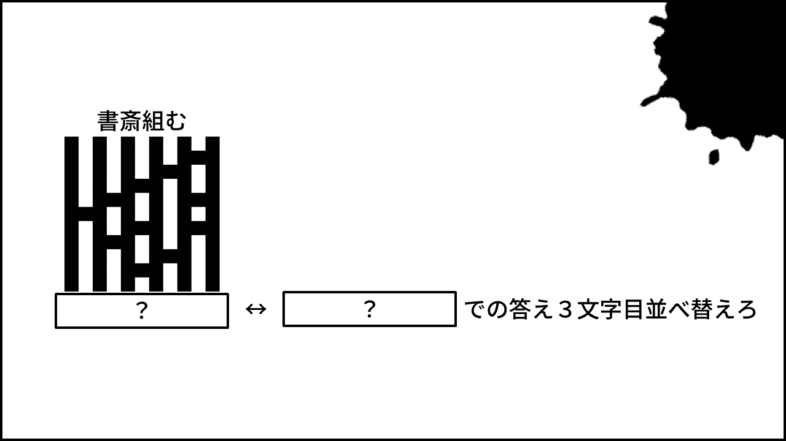
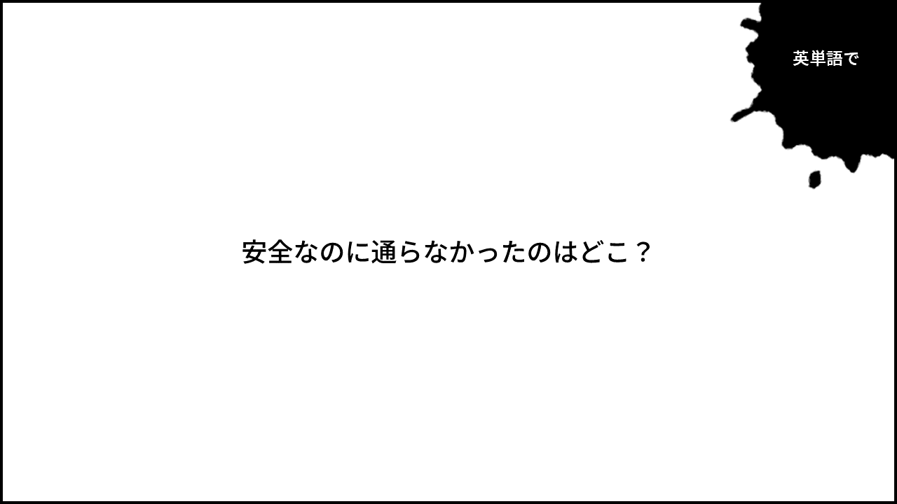

BLUE BLOCK: BASEMENT
ソースコードを見る行為は禁止です。
検索行為はしても構いません。
スマホでは最新verの Safari , Google Chrome，PCでは Google Chrome でのプレーを推奨します。
スマホでもプレー可能です。
ページをリロードすると初めから(この注意事項のページから)の再開となります。ご注意ください。
謎の答えなどをメモしておくなどすることを推奨します。
解答は半角英字で入力してください。解答形式に指示がある場合はそれに従ってください。
ひらがなを入力するとヘボン式ローマ字に変換する機能を用意しました。ヘボン式で解答する問題で是非ご利用ください。
B1F 0/6



B2F 0/6



 

B3F 0/6
 







FINAL